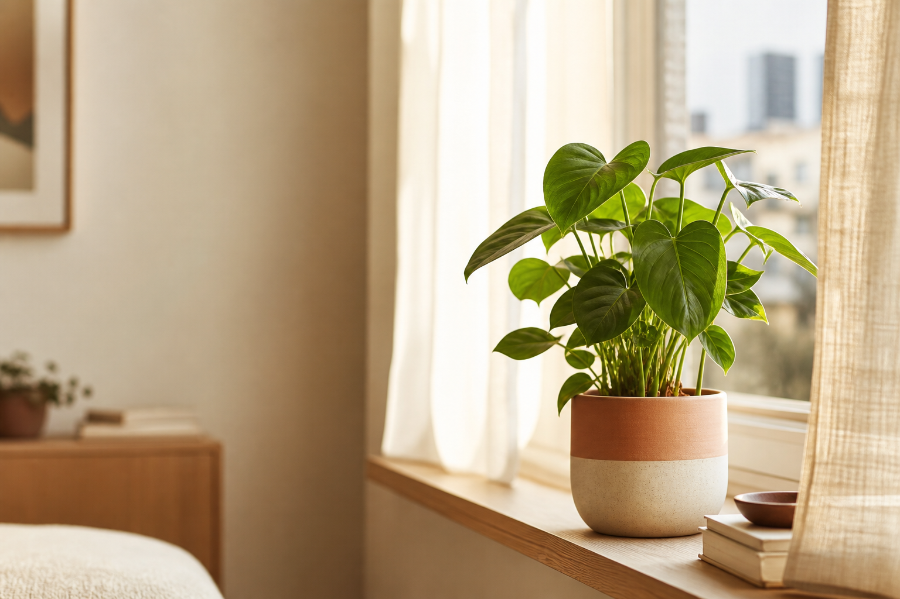
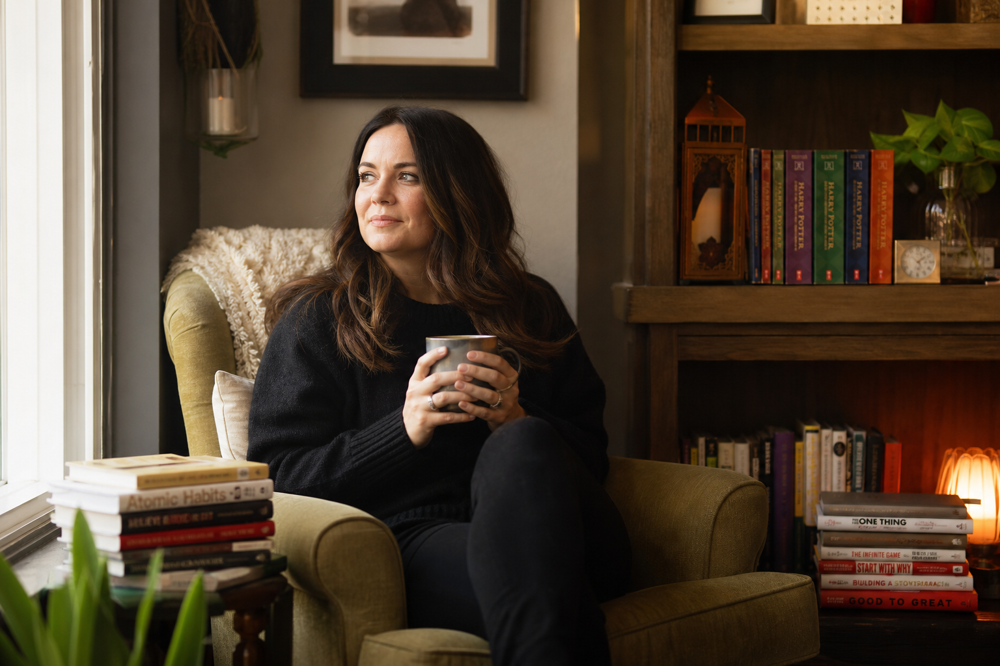
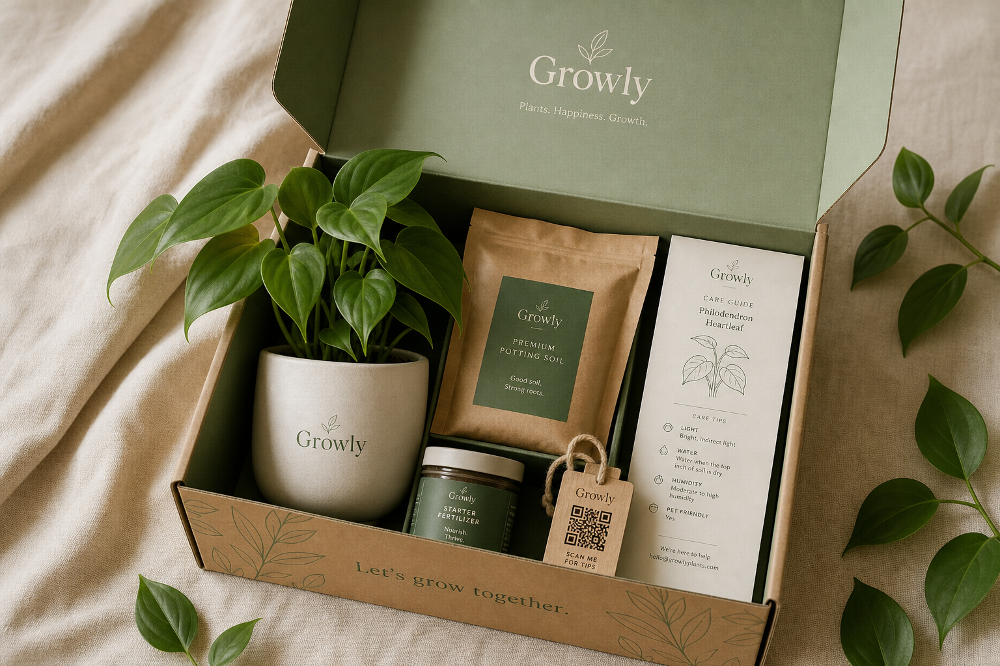
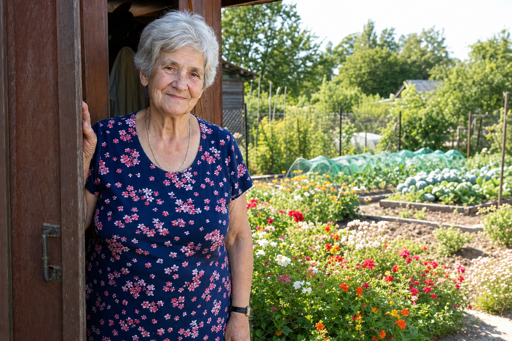

Pierwszy udany kontakt z naturą w domu
Twój pierwszy mały ogród
zaczyna się od jednej rośliny.
Growly Box daje Ci zdrową roślinę, dobrane akcesoria i proste wskazówki, żeby zacząć bez stresu — nawet jeśli myślisz, że nie masz ręki do kwiatów.
120 osób już czeka na start Growly
- 🪴 Roślina dobrana pod Twoje warunki
- 📋 Instrukcja krok po kroku
- 💬 Wsparcie po ludzku
Znasz to uczucie?
„Ja nawet kaktusa bym zasuszył”.
To nie kwestia „ręki do roślin”. To kwestia tego, że nikt Ci nigdy nie pokazał, jak zacząć. Wybór w sklepie przytłacza, instrukcji brak, a jak coś pójdzie nie tak — szukasz losowych porad w internecie i się poddajesz.
-
Nie wiem, jaką roślinę wybrać
-
Boję się, że ją przeleję albo zapomnę podlać
-
Nie wiem, czy mam dość światła
-
Już raz mi się nie udało
Każdy z tych strachów ma proste rozwiązanie. Tylko nikt Ci go dotąd nie podał w jednym pudełku.

Skąd wzięło się Growly
Growly wyrosło ze wspomnienia ogrodu.
Ogród dziadków. Lato. Cień drzewa, ławka, porzeczki i czereśnie prosto z krzaka. Piwonie, dalie i róże, które zawsze były częścią domu.
Po mamie została mi miłość do roślin. Growly jest sposobem, żeby przekazać ją dalej — prosto, ciepło i bez botanicznego nadęcia. Nie chodzi o to, żebyś znał łacińskie nazwy. Chodzi o to, żebyś poczuł kawałek tego spokoju u siebie w domu.
Growly nie sprzedaje roślin. Growly daje ludziom pierwszy udany kontakt z naturą w domu.
Growly Starter Box
Growly nie daje Ci samej rośliny.
Growly daje Ci start.
To nie zwykły zakup rośliny. To Twoja pierwsza, spokojna lekcja opieki nad nią — wszystko, czego potrzebujesz, w jednym pudełku.
- 🌿 Zdrowa, łatwa roślina dla początkujących
- 🪴 Doniczka lub osłonka
- 🟤 Odpowiednie podłoże
- 🌱 Nawóz startowy
- 📋 Prosta instrukcja pielęgnacji
- 📱 Kod QR przypisany do Twojej rośliny
- 💬 Wskazówki od Cioci Joanny
- 🔆 Opcjonalnie prosty miernik światła
Bez ryzyka. Najpierw rezerwujesz miejsce — płacisz dopiero, gdy box będzie gotowy.

Dlaczego nie po prostu market budowlany?
Roślina z marketu vs Growly Box
🛒 Roślina z marketu
- Nie wiesz, czy roślina pasuje do Twojego mieszkania
- Może być osłabiona, przesuszona albo przelana
- Sam dobierasz ziemię, nawóz i doniczkę
- Instrukcje są ogólne albo ich nie ma
- Gdy coś się dzieje — szukasz losowych porad w sieci
- Łatwo się zniechęcić po pierwszej porażce
🌱 Growly Box
- Roślina dobrana pod Twoje warunki i poziom doświadczenia
- Dostajesz zdrową roślinę przygotowaną do startu
- Wszystko w jednym boxie — nic nie kompletujesz
- Prosta instrukcja krok po kroku
- Skanujesz QR i masz wsparcie dla konkretnej rośliny
- Growly prowadzi Cię przez pierwszy etap opieki

Twój ludzki głos wsparcia
Rośliny tłumaczone po ludzku.
Ciocia Joanna nie jest anonimowym ekspertem ani encyklopedycznym botem. Jest ciepłym, ludzkim głosem, który tłumaczy rośliny bez oceniania i bez trudnych słów.
- Upraszcza pielęgnację
- Tłumaczy, nie ocenia
- Daje praktyczne rady
- Uspokaja, gdy roślina „coś robi”
— „Nie ma roślin nie do uratowania. Są tylko rośliny, którym nikt nie wytłumaczył, czego im trzeba.”
Prościej się nie da
Trzy kroki do pierwszej rośliny, której nie zasuszysz
Rezerwujesz box
Zostawiasz e-mail i zajmujesz miejsce w pierwszej, limitowanej partii.
Dostajesz wszystko gotowe
Zdrowa roślina, podłoże, nawóz, instrukcja i QR — w jednym pudełku pod drzwiami.
Rośniecie razem
Skanujesz QR, dostajesz wsparcie krok po kroku i przeżywasz pierwszy sukces.
Rośliny są żywe — i tak je traktujemy
Twoja roślina dojedzie w dobrej kondycji.
W zależności od pory roku zabezpieczamy boxy przed chłodem lub przegrzaniem, chronimy przed przesuszeniem i uszkodzeniem w transporcie. Bo pierwsza roślina, która dotarła zmarznięta, to ostatnia roślina, jaką ktoś zamawia.
To dopiero początek
Growly rośnie razem z Tobą
Pierwszy box to start. Osoby z pierwszej partii będą pierwsze przy każdym kolejnym kroku.
Strona Twojej rośliny
Skanujesz QR z doniczki: podlewanie, światło, typowe problemy, kiedy przesadzić.
Diagnoza po zdjęciu
Pokazujesz roślinę, Growly podpowiada, co się dzieje i co zrobić. Wkrótce.
AI projektant zieleni
Zdjęcie parapetu czy balkonu — a Growly proponuje, co i gdzie postawić. Wkrótce.
Nie jesteś sam/a
To mówią osoby, które zapisały się na listę
„Mam trzy uschnięte doniczki na sumieniu. Może czas, żeby ktoś mi w końcu wytłumaczył.”
„Chcę zieleni w domu, ale za każdym razem coś robię nie tak. Pomysł z gotowym boxem brzmi jak dla mnie.”
„Najbardziej podoba mi się, że nie muszę nic kompletować. Jedna roślina, jeden box, jasna instrukcja.”
Cytaty pochodzą z odpowiedzi osób zapisujących się na listę oczekujących Growly.
Zanim zapytasz
Najczęstsze pytania
Naprawdę nie mam ręki do roślin. To dla mnie?
Właśnie dla Ciebie. Growly Box jest pomyślany od zera dla osób, którym wcześniej się nie udało. Dostajesz łatwą roślinę i prowadzenie krok po kroku.
Czy muszę teraz płacić?
Nie. Teraz tylko rezerwujesz miejsce w pierwszej partii i zostawiasz e-mail. Damy Ci znać, zanim wystartujemy — decyzję o zakupie podejmiesz później.
Jaką roślinę dostanę?
Zdrową, łatwą roślinę dobraną pod warunki w Twoim domu i Twój poziom doświadczenia. Bez zgadywania w markecie.
Co, jeśli roślina zacznie „coś robić”?
Skanujesz QR z doniczki i dostajesz wsparcie dla konkretnej rośliny. A Ciocia Joanna tłumaczy wszystko po ludzku.
Kiedy startujecie?
Pierwsza partia jest limitowana i przygotowujemy ją ręcznie. Osoby z listy dostaną informację jako pierwsze — i jako pierwsze będą mogły zamówić.
Pierwsze Growly Boxy jeszcze rosną 🌱
Zacznij swój pierwszy mały ogród.
Zostaw e-mail i zajmij miejsce w pierwszej, limitowanej partii. Damy Ci znać, kiedy wystartujemy — bez spamu, tylko konkret.
Dołącz do 120 osób, które już czekają.